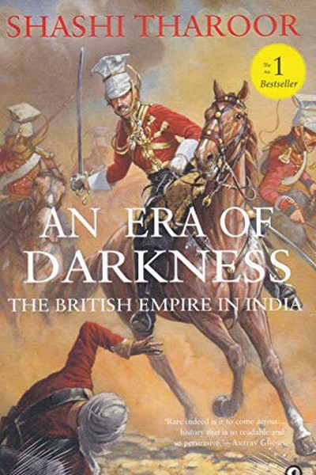

Why Did The Battle of Plassey Fail?
The Betrayal That Gave India's Richest Province to a Trading Company
📜 What Happened
In June 1757, the Nawab of Bengal, Siraj-ud-Daulah, faced the East India Company at Plassey with an army of 50,000 against a few thousand soldiers. On paper, the battle was unwinnable for the Company. But the Nawab's own general, Mir Jafar, had been secretly promised the throne in exchange for betraying him. When the battle began, Mir Jafar's army stood idle, the Nawab's forces collapsed in confusion, and Siraj fled and was later executed. Mir Jafar got his throne — and the Company got Bengal, the richest province in India, its treasury looted, its trade monopolised. Within a century, a trading firm ruled the subcontinent. The battle was less a war than a transaction: one man's ambition sold a nation's future, and the buyer paid with the country itself.
☠️ The Fatal Mistake
The Nawab trusted a man whose ambition outran his loyalty — and the Company exploited the division perfectly.
🧠 The Lesson (Free for You)
Every empire that has ever fallen in India has been unlocked from inside: Plassey was won before the first shot because someone on the inside had a price. The defence against this is not paranoia — it is making loyalty more valuable than betrayal. When your key people have more to gain from your ruin than from your survival, the battle is already lost. Check your Mir Jafars before the war, not after the throne changes hands.
📕 The Antidote Book

Tharoor's devastating counter-history of the British Raj: far from the 'blessing' of imperial apologists, British rule systematically deindustrialized India, drained its wealth, engineered famines, and left a legacy of…
📖 OPEN THE FULL INTERACTIVE BREAKDOWN →Searchable, filterable, free forever — they paid billions; your lesson is free.